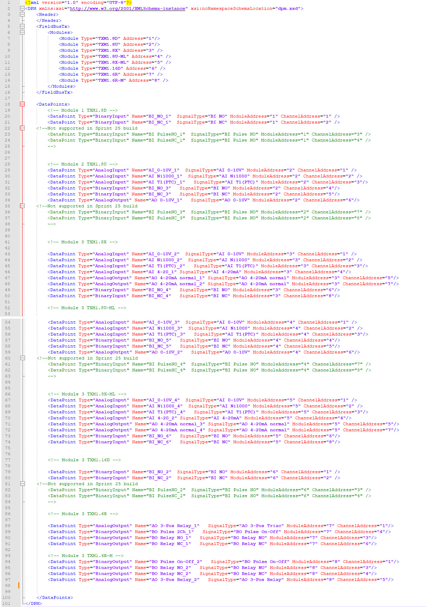
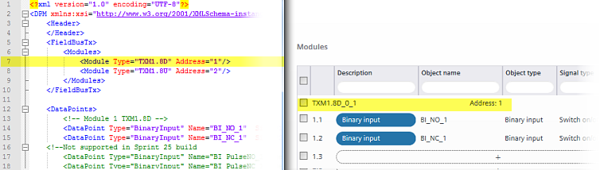
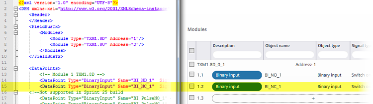

xml file structure
View a sample xml import file.

<?xml version="1.0" encoding="UTF-8"?>
<DPM xmlns:xsi="http://www.w3.org/2001/XMLSchema-instance" xsi:noNamespaceSchemaLocation="dpm.xsd">
<Header>
</Header>
<FieldBusTx>
<Modules>
<Module Type="TXM1.8D" Address="1"/>
<Module Type="TXM1.8U" Address="2"/>
<Module Type="TXM1.8X" Address="3" />
<Module Type="TXM1.8U-ML" Address="4" />
<Module Type="TXM1.8X-ML" Address="5" />
<Module Type="TXM1.16D" Address="6" />
<Module Type="TXM1.6R" Address="7" />
<Module Type="TXM1.6R-M" Address="8" />
</Modules>
</FieldBusTx>
<DataPoints>
<!-- Module 1 TXM1.8D -->
<DataPoint Type="BinaryInput" Name="BI_NO_1" SignalType="BI NO" ModuleAddress="1" ChannelAddress="1" />
<DataPoint Type="BinaryInput" Name="BI_NC_1" SignalType="BI NC" ModuleAddress="1" ChannelAddress="2" />
<!--Not supported in Sprint 25 build
<DataPoint Type="BinaryInput" Name="BI PulseNO_1" SignalType="BI Pulse NO" ModuleAddress="1" ChannelAddress="3" />
<DataPoint Type="BinaryInput" Name="BI PulseNC_1" SignalType="BI Pulse NO" ModuleAddress="1" ChannelAddress="4" />
-->
<!-- Module 2 TXM1.8U -->
<DataPoint Type="AnalogInput" Name="AI_0-10V_1" SignalType="AI 0-10V" ModuleAddress="2" ChannelAddress="1" />
<DataPoint Type="AnalogInput" Name="AI Ni1000_1" SignalType="AI Ni1000" ModuleAddress="2" ChannelAddress="2" />
<DataPoint Type="AnalogInput" Name="AI T1(PTC)_1" SignalType="AI T1(PTC)" ModuleAddress="2" ChannelAddress="3"/>
<DataPoint Type="BinaryInput" Name="BI_NO_3" SignalType="BI NO" ModuleAddress="2" ChannelAddress="4"/>
<DataPoint Type="BinaryInput" Name="BI_NC_3" SignalType="BI NC" ModuleAddress="2" ChannelAddress="5"/>
<DataPoint Type="AnalogOutput" Name="AO 0-10V_1" SignalType="AO 0-10V" ModuleAddress="2" ChannelAddress="6"/>
<!--Not supported in Sprint 25 build
<DataPoint Type="BinaryInput" Name="BI PulseNO_3" SignalType="BI Pulse NO" ModuleAddress="2" ChannelAddress="7" />
<DataPoint Type="BinaryInput" Name="BI PulseNC_3" SignalType="BI Pulse NO" ModuleAddress="2" ChannelAddress="8" />
-->
<!-- Module 3 TXM1.8X -->
<DataPoint Type="AnalogInput" Name="AI_0-10V_2" SignalType="AI 0-10V" ModuleAddress="3" ChannelAddress="1" />
<DataPoint Type="AnalogInput" Name="AI Ni1000_2" SignalType="AI Ni1000" ModuleAddress="3" ChannelAddress="2" />
<DataPoint Type="AnalogInput" Name="AI T1(PTC)_2" SignalType="AI T1(PTC)" ModuleAddress="3" ChannelAddress="3"/>
<DataPoint Type="AnalogInput" Name="AI 4-20_1" SignalType="AI 4-20mA" ModuleAddress="3" ChannelAddress="4"/>
<DataPoint Type="AnalogOutput" Name="AO 4-20mA normal_1" SignalType="AO 4-20mA normal" ModuleAddress="3" ChannelAddress="5"/>
<DataPoint Type="AnalogOutput" Name="AO 4-20mA normal_2" SignalType="AO 4-20mA normal" ModuleAddress="3" ChannelAddress="7"/>
<DataPoint Type="BinaryInput" Name="BI_NO_4" SignalType="BI NO" ModuleAddress="3" ChannelAddress="6"/>
<DataPoint Type="BinaryInput" Name="BI_NC_4" SignalType="BI NC" ModuleAddress="3" ChannelAddress="8"/>
<!-- Module 3 TXM1.8U-ML -->
<DataPoint Type="AnalogInput" Name="AI_0-10V_3" SignalType="AI 0-10V" ModuleAddress="4" ChannelAddress="1" />
<DataPoint Type="AnalogInput" Name="AI Ni1000_3" SignalType="AI Ni1000" ModuleAddress="4" ChannelAddress="2" />
<DataPoint Type="AnalogInput" Name="AI T1(PTC)_3" SignalType="AI T1(PTC)" ModuleAddress="4" ChannelAddress="3"/>
<DataPoint Type="BinaryInput" Name="BI_NO_5" SignalType="BI NO" ModuleAddress="4" ChannelAddress="4"/>
<DataPoint Type="BinaryInput" Name="BI_NC_5" SignalType="BI NC" ModuleAddress="4" ChannelAddress="5"/>
<DataPoint Type="AnalogOutput" Name="AO 0-10V_2" SignalType="AO 0-10V" ModuleAddress="4" ChannelAddress="6"/>
<!--Not supported in Sprint 25 build
<DataPoint Type="BinaryInput" Name="BI PulseNO_4" SignalType="BI Pulse NO" ModuleAddress="4" ChannelAddress="7" />
<DataPoint Type="BinaryInput" Name="BI PulseNC_4" SignalType="BI Pulse NO" ModuleAddress="4" ChannelAddress="8" />
-->
<!-- Module 3 TXM1.8X-ML -->
<DataPoint Type="AnalogInput" Name="AI_0-10V_4" SignalType="AI 0-10V" ModuleAddress="5" ChannelAddress="1" />
<DataPoint Type="AnalogInput" Name="AI Ni1000_4" SignalType="AI Ni1000" ModuleAddress="5" ChannelAddress="2" />
<DataPoint Type="AnalogInput" Name="AI T1(PTC)_4" SignalType="AI T1(PTC)" ModuleAddress="5" ChannelAddress="3"/>
<DataPoint Type="AnalogInput" Name="AI 4-20_2" SignalType="AI 4-20mA" ModuleAddress="5" ChannelAddress="4"/>
<DataPoint Type="AnalogOutput" Name="AO 4-20mA normal_3" SignalType="AO 4-20mA normal" ModuleAddress="5" ChannelAddress="5"/>
<DataPoint Type="AnalogOutput" Name="AO 4-20mA normal_4" SignalType="AO 4-20mA normal" ModuleAddress="5" ChannelAddress="7"/>
<DataPoint Type="BinaryInput" Name="BI_NO_6" SignalType="BI NO" ModuleAddress="5" ChannelAddress="6"/>
<DataPoint Type="BinaryInput" Name="BI_NC_6" SignalType="BI NC" ModuleAddress="5" ChannelAddress="8"/>
<!-- Module 3 TXM1.16D -->
<DataPoint Type="BinaryInput" Name="BI_NO_2" SignalType="BI NO" ModuleAddress="6" ChannelAddress="1" />
<DataPoint Type="BinaryInput" Name="BI_NC_2" SignalType="BI NC" ModuleAddress="6" ChannelAddress="2" />
<!--Not supported in Sprint 25 build
<DataPoint Type="BinaryInput" Name="BI PulseNO_2" SignalType="BI Pulse NO" ModuleAddress="6" ChannelAddress="3" />
<DataPoint Type="BinaryInput" Name="BI PulseNC_2" SignalType="BI Pulse NO" ModuleAddress="6" ChannelAddress="4" />
-->
<!-- Module 3 TXM1.6R -->
<DataPoint Type="AnalogOutput" Name="AO 3-Pos Relay_1" SignalType="AO 3-Pos Triac" ModuleAddress="7" ChannelAddress="1"/>
<DataPoint Type="BinaryOutput" Name="BO Pulse 2Ch_1" SignalType="BO Pulse On-Off" ModuleAddress="7" ChannelAddress="4"/>
<DataPoint Type="BinaryOutput" Name="BO Relay NO_1" SignalType="BO Relay NO" ModuleAddress="7" ChannelAddress="3"/>
<DataPoint Type="BinaryOutput" Name="BO Relay NC_1" SignalType="BO Relay NC" ModuleAddress="7" ChannelAddress="6"/>
<!-- Module 3 TXM1.6R-M -->
<DataPoint Type="BinaryOutput" Name="BO Pulse On-Off_2" SignalType="BO Pulse On-Off" ModuleAddress="8" ChannelAddress="1"/>
<DataPoint Type="BinaryOutput" Name="BO Relay NO_2" SignalType="BO Relay NO" ModuleAddress="8" ChannelAddress="3"/>
<DataPoint Type="BinaryOutput" Name="BO Relay NC_2" SignalType="BO Relay NC" ModuleAddress="8" ChannelAddress="4"/>
<DataPoint Type="AnalogOutput" Name="AO 3-Pos Relay_2" SignalType="AO 3-Pos Relay" ModuleAddress="8" ChannelAddress="5"/>
</DataPoints>
</DPM>
I/O modules <Modules>

Attribute | Allowed values |
|---|---|
Type | The list of possible values corresponds to the TX-I/O values device list. |
Address | Range 1…8 |
Data points <DataPoints>

Attribute | Allowed values | |
|---|---|---|
Type | "AnalogInput" | Analog input |
"AnalogOutput" | Analog output | |
"BinaryInput" | Binary input | |
"BinaryOutput" | Binary output | |
Name | Name of the object. Optional. If left empty, the object name is created automatically. It consists of an abbreviation of the signal type and a running number. | |
Description | Description of the data point. | |
SignalType | "AI 0-10V" | 0...10 V DC |
"AI 4-20mA" | 4...20 mA | |
"AI 0-10 V DC (0-100 %)" | 0...10 V DC => 0...100 % | |
"AI 4-20 mA (0-100 %)" | 4...20 mA => 0...100 % | |
"AI Ni1000" | Temperature (LG-Ni1000 -50...180 °C) | |
"AI PT1K375" | Temperature (Pt1000, NA) | |
"AI PT1K385" | Temperature (Pt1000, EU) | |
"AI T1(PTC)" | Temperature (PTC) | |
"AI NTC10K" | Temperature (NTC 10k) | |
"AI NTC100K" | Temperature (NTC 100k) | |
"AO 0-10V" | 0...10 V DC | |
"AO 0-10V normal" | 0...10 V DC (normalized 0...100%) | |
"AO 4-20mA" | 4...20 mA | |
"AO 4-20mA normal" | 4...20 mA (normalized 0...100%) | |
"AO 3-Pos Relay" | 3-points control, relay 2 channels | |
"AO PWM" | Pulse width mod.: const.period | |
"AO PWM thermal" | Pulse width modulation: thermal | |
"AO PWM var" | Pulse width modulation: variable period | |
"AO PWM spring" | Pulse width mod.: spring return | |
"BI NO" | Switch on/off, contact normally open | |
"BI NC" | Switch on/off, contact normally closed | |
"BI Pulse NO" | Pulse on/off, contact normally open | |
"BI Pulse NC" | Pulse on/off, contact normally closed | |
"BO Relay NO" | Switch on/off, relay normally inactive | |
"BO Relay NC" | Switch on/off, relay normally active | |
"BO Triac NO" | Switch on/off, Triac normally inactive | |
"BO Triac NC" | Switch on/off, Triac normally active | |
"BO Pulse On-Off" | On/off pulse, two channels | |
FieldDevice | This attribute is for information purposes only. The string entered is displayyed in the Field device type property of the data point. For example, you can enter the product number of the connected field device. | |
Unit | Data point unit. Only analog inputs and analog outputs can have units. | |
ModuleAddress | Range 1…72 | |
ChannelAddress | May range 1…16 depending on the available channels of the specific module. | |
Possible scenarios:
Modifying modules and data points (XML)
Adding data points with module assignment
Adding data points without module assignment
Changing existing data point values